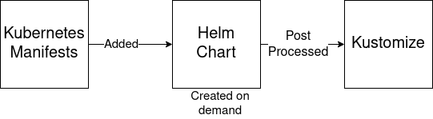

Understanding Bundles¶
Each registered GitRepo that is monitored can produce one or more bundles. The bundle is a
collection of resources that contains resource that will be deployed to one or more clusters and can be customized
per target. This means the structure of the monitored git repository is the same as the structure of a bundle or
a directory structure of multiple bundles. The location of the bundles is specified in the GitRepo type with
the spec.bundleDirs field. By default the value is ./.
Directory structure¶
The directory structure of a single bundle will look like the below depending on your use case.
./fleet.yaml # Bundle descriptor (optional)
./manifests/ # Directory for raw kubernetes YAML
./chart/ # Directory for an inline Helm Chart
./kustomize/ # Directory for kustomization resources
./overlays/${OVERLAY_NAME} # Directory for customize raw Kubernetes YAML resources
Bundle Rending¶
One can choose between using raw Kubernetes YAML, Helm, Kustomize, or some combination of the three. Regardless of the strategy you use, you should understand all three approaches to understand the capabilities of the system. Refer to examples for specific examples.
Render Pipeline¶

A bundle has three types of resources in it. Plain kubernetes manifests are available in manifest/. Chart files for
a helm chart are available in chart/. Finally, kustomize files are in kustomize/. Each one of these directories
and content types are optional but combined to create one helm chart that is to be deployed to the cluster. Each
content type is optional, but regardless of what type of input is chosen the final asset is always a Helm chart.
Helm is core to the architecture of Fleet, but this does not mean you are required to author
Helm charts yourself. You can choose a pure Kubernetes YAML or Kustomize approach.
Phase 1: Plain Kubernetes YAML¶
Any resource that is found in manifests/ will be copied to the target chart in the chart/templates/ folder. This
means these files can be plain YAML or have helm golang templating.
Phase 2: Helm Chart generation¶
The chart/ folder is expected to have Helm chart content in it. If this folder is not found then a chart will
be generated on demand. This means a Chart.yaml will be created for you if not found. Since content from
manifests/ is copied to chart/templates, one can deploy helm charts without knowning anything about helm, instead
using an approach closer to kubectl apply.
Phase 3: Kustomize Post Process¶
After the Helm chart from phase 2 is rendered, Fleet is called as a post renderer to apply run kustomize. The
kustomizeDir field from the target or overlays can be used to determine which kustomization.yaml is invoked.
The objects generated by Helm are put into a field named ${kustomizeDir}/manifests.yaml and the kustomization.yaml
found in kustomizeDir is dynamically modified to add manifests.yaml to the resources: list.
fleet.yaml¶
A bundle is defined as optionally containing a fleet.yaml file at it's root. Again, this file is optional, but
for many multi-cluster use cases it is fairly essential. The structure of the fleet.yaml is essentially the
same structure as the spec field of the Bundle custom resource definition. Below is a reference of all fields
and how they are used. Depending on the which style (single-cluster or multi-cluster) and rendered (raw YAML, Helm,
or Kustomize) you are using the fields may or may not be applicable.
# Used to populate metadata.labels in the Bundle custom resource. The labels of
# a bundle are important if you wish to use the BundleNamespaceMapping approach
# for common configuration management.
labels:
custom: value
# Used to populate metadata.annotations in the Bundle custom resource. Currently
# there is no specific use of annotations by Fleet and is here just to allow the
# users to add additional metadata to bundles.
annotations:
custom: value
# Use a custom folder for plain Kubernetes YAML files. This can also refer to a
# URL to download resource from. This uses Hashicorp's go-getter, so any support
# source (http, git, S3) should work.
# Default: manifests
manifestsDir: ./manifests
# Use a custom folder for kustomize resources. This can also refer to a URL to
# download resource from, similar to the manifestDir field
# Default: kustomize
kustomizeDir: ./kustomize
# Use a custom source for chart resources. This is commonly a URL pointing to
# the chart tgz file. Similar to the the manifestDir field any go-getter URL
# is supported.
# Default: chart
chart: ./chart
# The default namespace to be applied to resources. This field is not used to
# enforce or lock down the deployment to a specific namespace, but instead
# provide the default value of the namespace field if one is not specified
# in the manifests. If you wish to actually restrict the namespace use then
# that should be done using the RBAC of the service account assigned to the
# GitRepo
# Default: default
namespace: default
# When resources are applied the system will wait for the resources to initially
# become Ready. If the resources are not ready in this time frame the
# application of resources fails and the bundle will stay in a WaitApplied state.
# Default: 600 (10 minutes)
timeoutSeconds: 600
# Default values to be based to Helm upon installation. The structure of this
# field is the same structure that would be in the values.yaml file.
# Default: null
values:
image: custom/value:latest
# A paused bundle will not update downstream clusters but instead mark the bundle
# as OutOfSync. On can the manually confirm that a bundle should be deployed to
# the downstream clusters.
# Default: false
paused: false
rolloutStrategy:
# A number or percentage of clusters that can be unavailable during an update
# of a bundle. This follows the same basic approach as a deployment rollout
# strategy.
# default: 10%
maxUnavailable: 15%
# A number or percentage of cluster partitions that can be unavailable during
# an update of a bundle.
# default: 0
maxUnavailablePartitions: 20%
# A number of percentage of how to automatically partition clusters if not
# specific partitioning strategy is configured.
# default: 25%
autoPartitionSize: 10%
# A list of definitions of partitions. If any target clusters do not match
# the configuration they are added to partitions at the end following the
# autoPartitionSize.
partitions:
# A user friend name given to the partition used for Display (optional).
# default: ""
- name: canary
# A number or percentage of clusters that can be unavailable in this
# partition before this partition is treated as done.
# default: 10%
maxUnavailable: 10%
# Selector matching cluster labels to include in this partition
clusterSelector:
matchLabels:
env: prod
# A cluster group name to include in this partition
clusterGroup: agroup
# Selector matching cluster group labels to include in this partition
clusterGroupSelector: agroup
# Targets are used to match clusters that resources should be configured for.
# Each target can specify a series of overlays to apply customizations for
# that cluster. Targets are evaluated in order and the first one to match is used
targets:
# The name of target. If not specified a default name of the format "target000"
# will be used
- name: prod
# Override namespace
namespace: newvalue
# Override the base dir where the kustomization.yaml is found
# Please note this directory is relative to ./kustomize
kustomizedDir: production/
# Override the timeoutSeconds parameter
timeoutSeconds: 5
# Merge in new values used by Helm. The merge logic follows the logic of how Helm
# merges values, which is basically just a map merge and list are overwritten.
values:
custom: value
# Overlays to be applied on this target in the specified order. The names
# of the overlays correspond to the directory names in the ./overlays folder.
overlays:
- custom2
- custom3
# A selector used to match clusters. The structure is the standard
# metav1.LabelSelector format. If clusterGroupSelector or clusterGroup is specified,
# clusterSelector will be used only to further refine the selection after
# clusterGroupSelector and clusterGroup is evaluated.
clusterSelector:
matchLabels:
env: prod
# A selector used to match cluster groups.
clusterGroupSelector:
matchLabels:
region: us-east
# A specific clusterGroup by name that will be selected
clusterGroup: group1
Target Matching¶
All clusters and cluster groups in the same namespace as the GitRepo/Bundle will be evaluated against all bundle targets.
The targets list is evaluated one by one and the first target that matches is used for that bundle for that cluster. If
no match is made, then no customizations will be applied. The superset of all valid targets for a bundle is
set in the definition of the GitRepo. The target definitions in the bundle are only used to decide what configuration
to apply to the target, where as the actual matching of whether a cluster should be deployed to or not is determined
by the definition of the GitRepo.
There are three approaches to matching clusters.
One can use cluster selectors, cluster group selectors, or an explicit cluster group name. All criteria is additive so
the final match is evaluated as "clusterSelector && clusterGroupSelector && clusterGroup". If any of the three have the
default value it is dropped from the criteria. The default value is either null or "". It is important to realize
that the value {} for a selector means "match everything."
# Match everything
clusterSelector: {}
# Selector ignored
clusterSelector: null
Resource Overlays and Patching¶
A target references a series of overlays and those overlay can have resources in them. The resource overlay content uses a file name based approach. This is different from kustomize which uses a resource based approach. In kustomize the resource Group, Kind, Version, Name, and Namespace identify resources and are then merged or patched. For Fleet the overlay resources will override or patch content with a matching file name.
# Base files
manifests/deployment.yaml
manifests/svc.yaml
# Overlay files
# The follow file we be added
overlays/custom/configmap.yaml
# The following file will replace manifests/svc.yaml
overlays/custom/svc.yaml
# The following file will patch manifest/deployment.yaml
overlays/custom/deployment_patch.yaml
A file named foo will replace a file called foo from the base resources or a previous overlay. In order to patch
content a file the convention of adding _patch. (notice the trailing period) to the filename is used. The string _patch.
will be replaced with . from the file name and that will be used as the target. For example deployment_patch.yaml
will target deployment.yaml. The patch will be applied using JSON Merge, Strategic Merge Patch, or JSON Patch.
Which strategy is used is based on the file content. Even though JSON strategies are used, the files can be written
using YAML syntax.